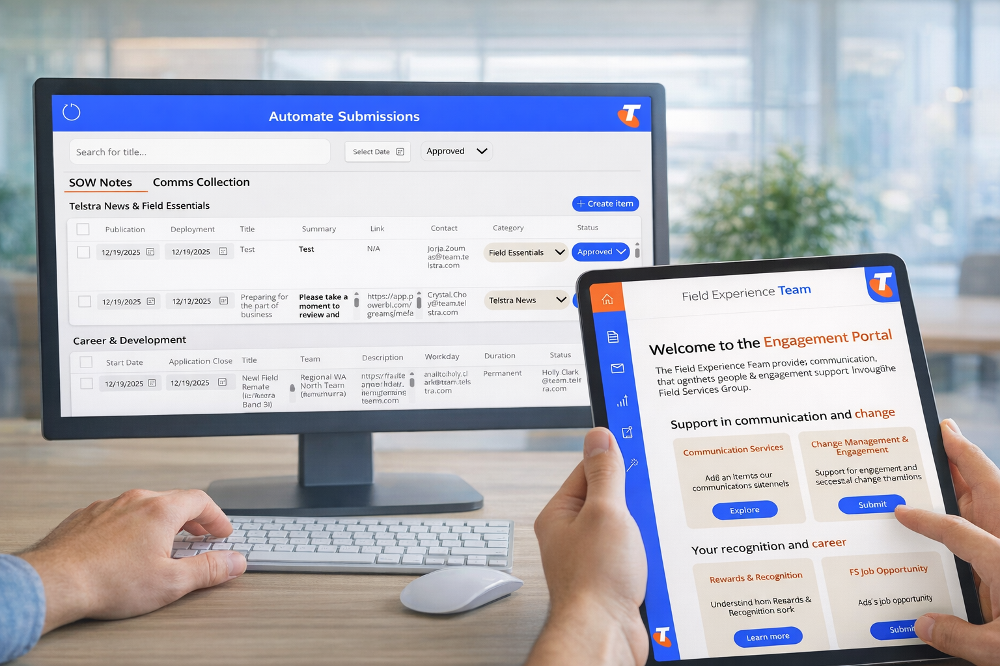

Selected Projects

B2B SaaS / Automation
View Case Study →
Telstra Marketing Engine
Transformed a manual campaign distribution process into a seamless internal product. Reduced time-to-market by 25% through Power Platform orchestration.
20hr+
Weekly Savings
100%
Team Adoption

Data Visualisation
View Case Study →
Secondhand Market Insights
A data-driven deep dive into sustainable fashion. Communicating complex market trends through interactive visualization.
Insight
Driven Design
Data
Visualized

Product Strategy & UX
Research
View Case Study →
Terasu: A solution to job security
A design-led approach to career starters navigating job security. Focused on UX research and prototyping.
UX
Research
MVP
Development